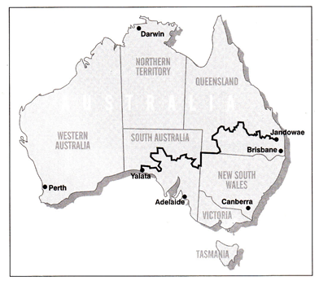
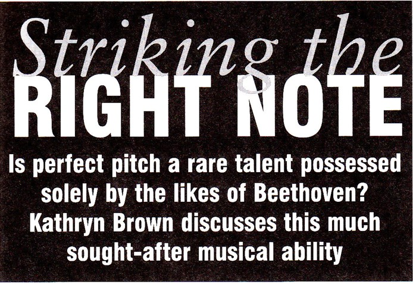

<!-- 원본: ACADEMIC6/reading (레거시 서버에서 2026-11-14 수집, 정답 제거) -->
<div class="legacy-content"><div id="pageContainer">
<div class="page" id="page-0">
<div class="flex flex-col md:flex-row gap-6">
<div class="w-full md:w-1/2 max-h-[600px] overflow-y-auto">
<h3 class="text-xl font-semibold text-purple-800 mb-4">You should spend about 20 minutes
                                    on <b>Questions 1 - 13,</b> which are based on
                                    Reading
                                    Passage 1 below.
                                </h3>
<div class="text-gray-700 leading-relaxed">
<div style="width:800px; border:1px solid #bbb; padding:20px;">
<center><b style="font-size:55px; color:#000; font-family: 'Times New Roman', Times, serif;">The
                                                Great Australian Fence</b></center>
<br/>
<div>
                                            A war has been going on for almost a
                                            hundred years between the sheep
                                            farmers of Australia and the dingo,
                                            Australia's wild dog. To protect their
                                            livelihood, the farmers built a wire fence,
                                            3,307 miles of continuous wire mesh,
                                            reaching from the coast of South Australia all
                                            the way to the cotton fields of eastern
                                            Queensland, just short of the Pacific Ocean.<br/>
                                            The Fence is Australia's version of the Great
                                            Wall of China, but even longer, erected to keep
                                            out hostile invaders, in this case hordes of
                                            yellow dogs. The empire it preserves is that of
                                            the woolgrowers, sovereigns of the world's
                                            second largest sheep flock, after China's
                                            some 123 million head - and keepers of a wool
                                            export business worth four billion dollars.
                                            Never mind that more and more people-
                                            conservationists, politicians, taxpayers and
                                            animal lovers - say that such a barrier would
                                            never be allowed today on ecological grounds.
                                            With sections of it almost a hundred years old,
                                            the dog fence has become, as conservationist
                                            Lindsay Fairweather ruefully admits, 'an icon of
                                            Australian frontier ingenuity'.
                                            
<br/>
<div style="height:5px;"></div>
                                               To appreciate this unusual outback monument and to
                                            meet the
                                            people whose
                                            livelihoods depend on it, I spent part of an Australian autumn
                                            travelling the
                                            wire. It’s known by different names in different states: the Dog Fence
                                            in South
                                            Australia, the Border Fence in New South Wales and the Barrier Fence in
                                            Queensland. I would call it simply the Fence.<br/>
                                               For most of its prodigious length, this epic fence
                                            winds like
                                            a road across a
                                            landscape that, unless a big rain has fallen, scarcely has rivers. The
                                            eccentric
                                            route, prescribed mostly by property lines, provides a sampler of
                                            outback
                                            topography: the Fence goes over sand dunes, past salt lakes, up and down
                                            rock-strewn hills, through dense scrub and across barren plains.<br/>
                                               The Fence stays away from towns. Where it passes near
                                            a town,
                                            it has actually become a tourist attraction visited on bus tours. It
                                            marks the
                                            traditional dividing line between cattle and sheep. Inside, where the
                                            dingoes
                                            are legally classified as vermin, they are shot, poisoned and trapped.
                                            Sheep and
                                            dingoes do not mix and the Fence sends that message mile after mile.<br/>
                                               What is this creature that by itself threatens an
                                            entire
                                            industry, inflicting several millions of dollars of damage a year
                                            despite the
                                            presence of the world’s most obsessive fence? Cousin to the coyote and
                                            the
                                            jackal, descended from the Asian wolf, Canis lupus dingo is an
                                            introduced
                                            species of wild dog. Skeletal remains indicate that the dingo was
                                            introduced to
                                            Australia more than 3,500 years ago probably with Asian seafarers who
                                            landed on
                                            the north coast. The adaptable dingo spread rapidly and in a short time
                                            became
                                            the top predator, killing off all its marsupial
                                            <br/>
<div style="height:5px;"></div>
                                            competitors. The dingo looks like a small wolf with a long nose, short
                                            pointed
                                            ears, and a bushy tail. Dingoes rarely bark; they yelp and howl.
                                            Standing about
                                            22 inches at the shoulder, slightly taller than a coyote, the dingo is
                                            Australia's largest land carnivore.<br/>
                                               The woolgrowers' war against dingoes, which is similar
                                            to the
                                            sheep ranchers' rage against coyotes in the US, started not long after
                                            the first
                                            European settlers disembarked in 1788, bringing with them a cargo of
                                            sheep.
                                            Dingoes officially became outlaws in 1830 when governments placed a
                                            bounty on
                                            their heads. Today, bounties for problem dogs killing sheep inside the
                                            Fence can
                                            reach $500. As pioneers penetrated the interior with their flocks of
                                            sheep,
                                            fences replaced shepherds until, by the end of the 19th century,
                                            thousands of
                                            miles of barrier fencing crisscrossed the vast grazing lands.<br/>
                                               'The dingo started out as a quiet observer,' writes
                                            Roland
                                            Breckwoldt, in A Very Elegant Animal: The Dingo, 'but soon came to
                                            represent
                                            everything that was dark and dangerous on the continent.' It is
                                            estimated that
                                            since sheep arrived in Australia, dingo numbers have increased a
                                            hundredfold.
                                            Though dingoes have been eradicated from parts of Australia, an educated
                                            guess
                                            puts the population at more than a million.<br/>
                                               Eventually, government officials and graziers agreed
                                            that one
                                            well-maintained fence, placed on the outer rim of sheep
                                            <br/>
<div style="height:5px;"></div>
                                            country and paid for by taxes levied on woolgrowersm should supplant the
                                            maze of
                                            private netting. By 1960, three states joined their barriers to form a
                                            single
                                            dog fence.<br/>
                                               The intense private battles between woolgrowers and
                                            dingoes
                                            have usually served
                                            to define the Fence only in economic terms. It marks the difference
                                            between
                                            profit and loss. Yet the Fence casts a much broader ecological shadow
                                            for it has
                                            become a kind of terrestrial dam, deflecting the flow of animals inside
                                            and out.
                                            The ecological side effects appear most vividly at Sturt National Park.
                                            In 1845,
                                            explorer Charles Sturt led an expedition through these parts on a futile
                                            search
                                            for an inland sea. For Sturt and other early explorers, it was a rare
                                            event to
                                            see a kangaroo. Now they are ubiquitous, and without a native predator,
                                            the
                                            kangaroo population has exploded inside the Fence. Kangaroos are now
                                            cursed more
                                            than dingoes. They have become the rivals of sheep, competing for water
                                            and
                                            grass. In response, state governments cull* more than three million
                                            kangaroos a
                                            year to keep Australia’s national symbol from overrunning the pastoral
                                            lands.
                                            Park officials, who recognize that the fence is to blame, respond to the
                                            excess
                                            of kangaroos by saying, “The fence is there, and we have to live with
                                            it.”<br/>
<br/>
                                            *Cull = to kill animals to reduce their population.
                                        </div>
</div>
</div>
</div>
<div class="w-full md:w-1/2 max-h-[600px] overflow-y-auto">
<div class="question mb-6">
<div>
<h2 style="font-size:20px;"><b>Questions 1 - 4</b></h2>
</div>
<br/>
<div>
<p>Choose the appropriate letters A-D and write them in boxes 1-4 on your answer
                                            sheet.
                                        </p>
<div style="height:10px"></div>
<div class="radio-group" id="question-1">
<b>1</b>   Why was the fence built?<br/>
<div style="height:10px"></div>
<label>       <input autocomplete="off" name="q1" type="radio" value="A"/>
<b>A</b>    to separate the sheep from the
                                                cattle</label><br/>
<div style="height:5px"></div>
<label>       <input autocomplete="off" name="q1" type="radio" value="B"/>
<b>B</b>    to stop the dingoes from being slaughtered by
                                                farmers</label><br/>
<div style="height:5px"></div>
<label>       <input autocomplete="off" name="q1" type="radio" value="C"/>
<b>C</b>    to act as a boundary between
                                                properties</label><br/>
<div style="height:5px"></div>
<label>       <input autocomplete="off" name="q1" type="radio" value="D"/>
<b>D</b>    to protect the Australian wool
                                                industry</label><br/>
<div style="height:10px"></div>
</div>
<br/>
<div class="radio-group" id="question-2">
<b>2</b>   On what point do the conservationists and politicians
                                            agree?<br/>
<div style="height:10px"></div>
<label>       <input autocomplete="off" name="q2" type="radio" value="A"/>
<b>A</b>    Wool exports are vital to the
                                                economy.</label><br/>
<div style="height:5px"></div>
<label>       <input autocomplete="off" name="q2" type="radio" value="B"/>
<b>B</b>    The fence poses a threat to the
                                                environment.</label><br/>
<div style="height:5px"></div>
<label>       <input autocomplete="off" name="q2" type="radio" value="C"/>
<b>C</b>    The fence acts as a useful frontier between
                                                states.</label><br/>
<div style="height:5px"></div>
<label>       <input autocomplete="off" name="q2" type="radio" value="D"/>
<b>D</b>    The number of dogs needs to be
                                                reduced.</label><br/>
<div style="height:10px"></div>
</div>
<br/>
<div class="radio-group" id="question-3">
<b>3</b>   Why did the author visit Australia?<br/>
<div style="height:10px"></div>
<label>       <input autocomplete="off" name="q3" type="radio" value="A"/>
<b>A</b>    to study Australian farming
                                                methods</label><br/>
<div style="height:5px"></div>
<label>       <input autocomplete="off" name="q3" type="radio" value="B"/>
<b>B</b>    to investigate how the fence was
                                                constructed</label><br/>
<div style="height:5px"></div>
<label>       <input autocomplete="off" name="q3" type="radio" value="C"/>
<b>C</b>    because he was interested in life around the
                                                fence</label><br/>
<div style="height:5px"></div>
<label>       <input autocomplete="off" name="q3" type="radio" value="D"/>
<b>D</b>    because he wanted to learn more about the
                                                wool
                                                industry</label><br/>
<div style="height:10px"></div>
</div>
<br/>
<div class="radio-group" id="question-4">
<b>4</b>   How does the author feel about the fence?<br/>
<div style="height:10px"></div>
<label>       <input autocomplete="off" name="q4" type="radio" value="A"/>
<b>A</b>    impressed</label><br/>
<div style="height:5px"></div>
<label>       <input autocomplete="off" name="q4" type="radio" value="B"/>
<b>B</b>    delighted</label><br/>
<div style="height:5px"></div>
<label>       <input autocomplete="off" name="q4" type="radio" value="C"/>
<b>C</b>    shocked</label><br/>
<div style="height:5px"></div>
<label>       <input autocomplete="off" name="q4" type="radio" value="D"/>
<b>D</b>    annoyed</label><br/>
<div style="height:10px"></div>
</div>
</div>
</div>
<div class="question mb-6">
<div>
<h2 style="font-size:20px;"><b>Questions 5 - 11</b></h2>
</div>
<br/>
<div>
<p>Do the following statements agree with the information given in Reading
                                            Passage
                                            1?<br/>
                                            In boxes 5-11 on your answer sheet write<br/>
</p>
<div style="height:10px"></div>
<p class="instructions">
                                               <b>YES</b>   if the statement agrees with the
                                            writer<br/>
                                               <b>NO</b>   if the statement contradicts the
                                            writer<br/>
                                               <b>NOT GIVEN</b>   if it is impossible to say
                                            what the
                                            writer thinks about this</p>
<div style="height:10px"></div>
<b id="question-5">5</b>   The fence serves a different purpose
                                        in each
                                        state.<br/>
                                           <label><input autocomplete="off" name="q5" type="radio" value="YES"/>  YES</label>   
                                        <label><input autocomplete="off" name="q5" type="radio" value="NO"/>  NO</label>   
                                        <label><input autocomplete="off" name="q5" type="radio" value="NOT GIVEN"/>  NOT
                                            GIVEN</label>
<br/>
<div style="height:10px"></div>
<b id="question-6">6</b>   The fence is only partially
                                        successful.<br/>
                                           <label><input autocomplete="off" name="q6" type="radio" value="YES"/>  YES</label>   
                                        <label><input autocomplete="off" name="q6" type="radio" value="NO"/>  NO</label>   
                                        <label><input autocomplete="off" name="q6" type="radio" value="NOT GIVEN"/>  NOT
                                            GIVEN</label>
<br/>
<div style="height:10px"></div>
<b id="question-7">7</b>   The dingo is indigenous to
                                        Australia.<br/>
                                           <label><input autocomplete="off" name="q7" type="radio" value="YES"/>  YES</label>   
                                        <label><input autocomplete="off" name="q7" type="radio" value="NO"/>  NO</label>   
                                        <label><input autocomplete="off" name="q7" type="radio" value="NOT GIVEN"/>  NOT
                                            GIVEN</label>
<br/>
<div style="height:10px"></div>
<b id="question-8">8</b>   Dingoes have flourished as a result of
                                        the sheep
                                        industry.<br/>
                                           <label><input autocomplete="off" name="q8" type="radio" value="YES"/>  YES</label>   
                                        <label><input autocomplete="off" name="q8" type="radio" value="NO"/>  NO</label>   
                                        <label><input autocomplete="off" name="q8" type="radio" value="NOT GIVEN"/>  NOT
                                            GIVEN</label>
<br/>
<div style="height:10px"></div>
<b id="question-9">9</b>   Dingoes are known to attack
                                        humans.<br/>
                                           <label><input autocomplete="off" name="q9" type="radio" value="YES"/>  YES</label>   
                                        <label><input autocomplete="off" name="q9" type="radio" value="NO"/>  NO</label>   
                                        <label><input autocomplete="off" name="q9" type="radio" value="NOT GIVEN"/>  NOT
                                            GIVEN</label>
<br/>
<div style="height:10px"></div>
<b id="question-10">10</b>   Kangaroos have increased in number
                                        because of the
                                        fence.<br/>   <label><input autocomplete="off" name="q10" type="radio" value="YES"/>  YES</label>   
                                        <label><input autocomplete="off" name="q10" type="radio" value="NO"/>  NO</label>   
                                        <label><input autocomplete="off" name="q10" type="radio" value="NOT GIVEN"/>  NOT
                                            GIVEN</label>
<br/>
<div style="height:10px"></div>
<b id="question-11">11</b>   The author does not agree with the
                                        culling of
                                        kangaroos.<br/>
                                           <label><input autocomplete="off" name="q11" type="radio" value="YES"/>  YES</label>   
                                        <label><input autocomplete="off" name="q11" type="radio" value="NO"/>  NO</label>   
                                        <label><input autocomplete="off" name="q11" type="radio" value="NOT GIVEN"/>  NOT
                                            GIVEN</label>
</div>
</div>
<div class="question mb-6">
<div>
<h2 style="font-size:20px;"><b>Questions 12 - 13</b></h2>
</div>
<br/>
<div>
<p>Choose the appropriate letters <b>A-D</b> and write them in boxes
                                            <b>12-13</b> on
                                            your answer
                                            sheet.
                                        </p>
<div style="height:10px"></div>
<div class="radio-group" id="question-12">
<b>12</b>   When did the authorities first acknowledge the dingo
                                            problem?<br/>
<div style="height:10px"></div>
<label>       <input autocomplete="off" name="q12" type="radio" value="A"/>
<b>A</b>    1788</label><br/>
<div style="height:5px"></div>
<label>       <input autocomplete="off" name="q12" type="radio" value="B"/>
<b>B</b>    1830</label><br/>
<div style="height:5px"></div>
<label>       <input autocomplete="off" name="q12" type="radio" value="C"/>
<b>C</b>    1845</label><br/>
<div style="height:5px"></div>
<label>       <input autocomplete="off" name="q12" type="radio" value="D"/>
<b>D</b>    1960</label><br/>
<div style="height:10px"></div>
</div>
<div style="height:10px"></div>
<div class="radio-group" id="question-13">
<b>13</b>   How do the park officials feel about the fence?<br/>
<div style="height:10px"></div>
<label>       <input autocomplete="off" name="q13" type="radio" value="A"/>
<b>A</b>    philosophical</label><br/>
<div style="height:5px"></div>
<label>       <input autocomplete="off" name="q13" type="radio" value="B"/>
<b>B</b>    angry</label><br/>
<div style="height:5px"></div>
<label>       <input autocomplete="off" name="q13" type="radio" value="C"/>
<b>C</b>    pleased</label><br/>
<div style="height:5px"></div>
<label>       <input autocomplete="off" name="q13" type="radio" value="D"/>
<b>D</b>    proud</label>
</div>
</div>
</div>
</div>
</div>
</div>
<div class="page" id="page-1">
<div class="flex flex-col md:flex-row gap-6">
<div class="w-full md:w-1/2 max-h-[600px] overflow-y-auto">
<h3 class="text-xl font-semibold text-purple-800 mb-4">You should spend
                                    about 20 minutes on Questions <b>14-27</b> which are based on this passage 2.
                                </h3>
<p class="text-gray-700 leading-relaxed">
</p><div style="width:800px; border:1px solid #bbb; padding:20px;">
<center><b style="font-size:88px; color:#646464;">IT'S ECO-LOGICAL</b></center>
<div style="height:5px"></div>
<center>
<h6 style="font-size:24px; color:#000;"><b>
                                                Planning an eco-friendly holiday can be a minefield for the
                                                well-meaning
                                                traveller, says Steve Watkins. But help is now at hand.
                                            </b></h6><br/>
</center>
<br/>
<div>
                                        If there were awards for tourism phrases that have been hijacked,
                                        diluted, and
                                        misused, then ‘ecotourism’ would earn top prize. The term first surfaced
                                        in the
                                        early 1980s, reflecting a surge in environmental awareness and a
                                        realisation by
                                        tour operators that many travellers wanted to believe their presence
                                        abroad
                                        would not have a negative impact. It rapidly became the hottest
                                        marketing tag a
                                        holiday could carry.
                                        <br/>
<div style="height:5px;"></div>
                                        These days, the ecotourism label is used to cover anything from a
                                        two-week tour
                                        living with remote Indonesian tribes to a one-hour motorboat trip
                                        through an
                                        Australian gorge. In fact, any tour that involves cultural interaction,
                                        natural
                                        beauty spots, wildlife, or a dash of soft adventure is likely to be
                                        included in
                                        the overflowing ecotourism folder. There is no doubt that the original
                                        motives
                                        behind the movement were honourable attempts to provide a way for those
                                        who
                                        cared to make informed choices, but the lack of regulations and a
                                        standard
                                        industry definition left many travellers lost in an ecotourism jungle.
                                        <br/>
<div style="height:5px;"></div>
                                        It is easier to understand why the ecotourism market has become so
                                        overcrowded
                                        when we look at its wider role in the world economy. According to World
                                        Tourism
                                        Organisation figures, ecotourism is worth US$20 billion a year and makes
                                        up
                                        one-fifth of all international tourism. Add to this an annual growth
                                        rate of
                                        around five percent and the pressure for many operators, both in
                                        developed and
                                        developing countries, to jump on the accelerating bandwagon is
                                        compelling.
                                        Without any widely recognised accreditation system, the consumer has
                                        been left
                                        to investigate the credentials of an operator themselves. This is a
                                        time-consuming process.
                                        <br/>
<div style="height:5px;"></div>
                                        process and many travellers usually take an
                                        operator's claims at face value, only adding to
                                        the proliferation of fake ecotours.<br/>
<div style="height:5px;"></div>
                                        However, there are several simple questions that
                                        will provide qualifying evidence of a company's
                                        commitment to minimise its impact on the
                                        environment and maximise the benefits to the
                                        tourism area's local community. For example,
                                        does the company use recycled or sustainable,
                                        locally harvested materials to build its tourist
                                        properties? Do they pay fair wages to all
                                        employees? Do they offer training to
                                        employees? It is common for city entrepreneurs
                                        to own tour companies in country areas, which
                                        can mean the money you pay ends up in the city
                                        rather than in the community being visited. By
                                        taking a little extra time to investigate the
                                        ecotourism options, it is not only possible to
                                        guide your custom to worthy operators but you
                                        will often find that the experience they offer is
                                        far more rewarding.<br/>
<div style="height:5px;"></div>
                                        The ecotourism business is still very much in
                                        need of a shake-up and a standardised
                                        approach. There are a few organisations that
                                        have sprung up in the last ten years or so that
                                        endeavour to educate travellers and operators
                                        about the benefits of responsible ecotourism.
                                        Founded in 1990, the Ecotourism Society (TES)
                                        is a non-profit organisation of travel industry,
                                        conservation and ecological professionals,
                                        which aims to make ecotourism a genuine tool
                                        for conservation and sustainable development.
                                        Helping to create inherent economic value in
                                        wilderness environments and threatened
                                        cultures has undoubtedly been one of the
                                        ecotourism movement's most notable
                                        achievements. TES organises an annual
                                        initiative to further aid development of the
                                        <br/>
<div style="height:5px;"></div>
                                        ecotourism industry. This year it is launching
                                        'Your Travel Choice Makes a Difference', an
                                        educational campaign aimed at helping
                                        consumers understand the potential positive
                                        and negative impacts of their travel decisions.
                                        TES also offers guidance on the choice of
                                        ecotour and has established a register of
                                        approved ecotourism operators around the
                                        world.
                                        <br/>
<div style="height:5px;"></div>
                                        A leading ecotourism operator in the United
                                        Kingdom is Tribes, which won the 1999
                                        Tourism Concern and Independent Traveller's
                                        World 'Award for Most Responsible Tour
                                        Operator'. Amanda Marks, owner and director
                                        of Tribes, believes that the ecotourism industry
                                        still has some way to go to get its house in order.
                                        Until now, no ecotourism accreditation scheme
                                        has really worked, principally because there has
                                        been no systematic way of checking that
                                        accredited companies actually comply with the
                                        code of practice. Amanda believes that the most
                                        promising system is the recently re-launched
                                        Green Globe 21 scheme. The Green Globe 21
                                        award is based on the sustainable development
                                        standards contained in Agenda 21 from the
                                        1992 Earth Summit and was originally
                                        coordinated by the World Travel &amp; Tourism
                                        Council (WTTC). The scheme is now an
                                        independent concern, though the WTTC still
                                        supports it. Until recently, tour companies
                                        became affiliates and could use the Green Globe<br/>
<div style="height:5px;"></div>
                                        logo merely on payment of an annual fee,
                                        hardly a suitable qualifying standard. However,
                                        in November 1999 Green Globe 21 introduced
                                        an annual, independent check on operators
                                        wishing to use the logo.<br/>
<div style="height:5px;"></div>
                                        Miriam Cain, from the Green Globe 21
                                        marketing development, explains that current
                                        and new affiliates will now have one year to
                                        ensure that their operations comply with
                                        Agenda 21 standards. If they fail the first
                                        inspection, they can only reapply once. The
                                        inspection process is not a cheap option,
                                        especially for large companies, but the benefits
                                        of having Green Globe status and the potential
                                        operational cost savings that complying with
                                        the standards can bring should be significant.
                                        We have joint ventures with organisations
                                        around the world, including Australia and the
                                        Caribbean, that will allow us to effectively
                                        check all affiliate operators,' says Miriam. The
                                        scheme also allows destination communities to
                                        become Green Globe 21 approved.<br/>
<div style="height:5px;"></div>
                                        For a relatively new industry it is not surprising
                                        that ecotourism has undergone teething pains.
                                        However, there are signs that things are
                                        changing for the better. With a committed and
                                        unified approach by the travel industry, local
                                        communities, travellers and environmental
                                        experts could make ecotourism a tag to be
                                        proud of and trusted.
                                    </div>
</div>
</div>
<div class="w-full md:w-1/2 max-h-[600px] overflow-y-auto">
<div class="question mb-6">
<div>
<h2 style="font-size:20px;"><b>Questions 14 - 19</b></h2>
</div>
<br/>
<div>
<p>Do the following statements agree with the views of the writer in Reading
                                            Passage 2?
                                        </p>
<p>In boxes 14-19 on your answer sheet write:</p>
<div style="height:10px"></div>
<p>
                                               <b>YES</b>   if the statement agrees with the
                                            writer<br/>
                                               <b>NO</b>   if the statement contradicts the
                                            writer<br/>
                                               <b>NOT GIVEN</b>   if it is impossible to say
                                            what the
                                            writer thinks about this</p>
<div style="height:10px"></div>
<div class="radio-group" id="question-14">
<b>14</b>   The term 'ecotourism' has become an advertising
                                            gimmick.<br/>
<div style="height:10px"></div>
<label>       <input autocomplete="off" name="q14" type="radio" value="YES"/>
<b>YES</b></label><br/>
<div style="height:5px"></div>
<label>       <input autocomplete="off" name="q14" type="radio" value="NO"/>
<b>NO</b></label><br/>
<div style="height:5px"></div>
<label>       <input autocomplete="off" name="q14" type="radio" value="NOT GIVEN"/>
<b>NOT GIVEN</b></label><br/>
<div style="height:5px"></div>
</div>
<br/>
<div class="radio-group" id="question-15">
<b>15</b>   The intentions of those who coined the term 'ecotourism'
                                            were
                                            sincere.<br/>
<div style="height:10px"></div>
<label>       <input autocomplete="off" name="q15" type="radio" value="YES"/>
<b>YES</b></label><br/>
<div style="height:5px"></div>
<label>       <input autocomplete="off" name="q15" type="radio" value="NO"/>
<b>NO</b></label><br/>
<div style="height:5px"></div>
<label>       <input autocomplete="off" name="q15" type="radio" value="NOT GIVEN"/>
<b>NOT GIVEN</b></label><br/>
<div style="height:5px"></div>
</div>
<br/>
<div class="radio-group" id="question-16">
<b>16</b>   Ecotourism is growing at a faster rate than any other type
                                            of
                                            travel.<br/>
<div style="height:10px"></div>
<label>       <input autocomplete="off" name="q16" type="radio" value="YES"/>
<b>YES</b></label><br/>
<div style="height:5px"></div>
<label>       <input autocomplete="off" name="q16" type="radio" value="NO"/>
<b>NO</b></label><br/>
<div style="height:5px"></div>
<label>       <input autocomplete="off" name="q16" type="radio" value="NOT GIVEN"/>
<b>NOT GIVEN</b></label><br/>
<div style="height:5px"></div>
</div>
<br/>
<div class="radio-group" id="question-17">
<b>17</b>   It is surprising that so many tour organisations decided to
                                            become
                                            involved in ecotourism.<br/>
<div style="height:10px"></div>
<label>       <input autocomplete="off" name="q17" type="radio" value="YES"/>
<b>YES</b></label><br/>
<div style="height:5px"></div>
<label>       <input autocomplete="off" name="q17" type="radio" value="NO"/>
<b>NO</b></label><br/>
<div style="height:5px"></div>
<label>       <input autocomplete="off" name="q17" type="radio" value="NOT GIVEN"/>
<b>NOT GIVEN</b></label><br/>
<div style="height:5px"></div>
</div>
<br/>
<div class="radio-group" id="question-18">
<b>18</b>   Tourists have learnt to make investigations about tour
                                            operators before
                                            using them.<br/>
<div style="height:10px"></div>
<label>       <input autocomplete="off" name="q18" type="radio" value="YES"/>
<b>YES</b></label><br/>
<div style="height:5px"></div>
<label>       <input autocomplete="off" name="q18" type="radio" value="NO"/>
<b>NO</b></label><br/>
<div style="height:5px"></div>
<label>       <input autocomplete="off" name="q18" type="radio" value="NOT GIVEN"/>
<b>NOT GIVEN</b></label><br/>
<div style="height:5px"></div>
</div>
<br/>
<div class="radio-group" id="question-19">
<b>19</b>   Tourists have had bad experiences on ecotour holidays.<br/>
<div style="height:10px"></div>
<label>       <input autocomplete="off" name="q19" type="radio" value="YES"/>
<b>YES</b></label><br/>
<div style="height:5px"></div>
<label>       <input autocomplete="off" name="q19" type="radio" value="NO"/>
<b>NO</b></label><br/>
<div style="height:5px"></div>
<label>       <input autocomplete="off" name="q19" type="radio" value="NOT GIVEN"/>
<b>NOT GIVEN</b></label><br/>
<div style="height:5px"></div>
</div>
</div>
</div>
<div class="question mb-6">
<div>
<h2 style="font-size:20px;"><b>Questions 20 - 22</b></h2>
</div>
<br/>
<div>
<p>According to the information given in the reading passage, which THREE of the
                                            following are true of the Ecotourism Society (TES)?
                                        </p>
<p>Write the appropriate letters A-F in boxes 20-22 on your answer sheet.</p>
<div style="height:10px"></div>
<b>20 </b>  <input autocomplete="off" name="q20" placeholder="(20)" style="width:150px; border:none; border-bottom:1px solid #000" type="text"/><br/>
<div style="height:10px"></div>
<b>21 </b>  <input autocomplete="off" name="q21" placeholder="(21)" style="width:150px; border:none; border-bottom:1px solid #000" type="text"/><br/>
<div style="height:10px"></div>
<b>22 </b>  <input autocomplete="off" name="q22" placeholder="(22)" style="width:150px; border:none; border-bottom:1px solid #000" type="text"/><br/>
<div style="height:10px"></div>
<br/>
<div style="width:700px; padding: 10px; border:1px solid #000;">
<b>A</b> It has monitored the growth in
                                            ecotourism.
                                            <br/>
<b>B</b> It involves a range of specialists
                                            in the
                                            field.
                                            <br/>
<b>C</b> It has received public recognition
                                            for the role
                                            it performs.
                                            <br/>
<b>D</b> It sets up regular ecotour
                                            promotions.
                                            <br/>
<b>E</b> It offers information on ecotours
                                            at an
                                            international level.
                                            <br/>
<b>F</b> It consults with people working in
                                            tourist
                                            destinations.
                                        </div>
</div>
</div>
<div class="question mb-6">
<div>
<h2 style="font-size:20px;"><b>Questions 23 - 24</b></h2>
</div>
<br/>
<div>
<p>According to the information given in the reading passage, which TWO of the
                                            following are true of the Green Globe 21 award?
                                        </p>
<p>Write the appropriate letters A-D in boxes 23-24 on your answer sheet.</p>
<div style="height:10px"></div>
<b>23 </b>  <input autocomplete="off" name="q23" placeholder="(23)" style="width:150px; border:none; border-bottom:1px solid #000" type="text"/><br/>
<div style="height:10px"></div>
<b>24 </b>  <input autocomplete="off" name="q24" placeholder="(24)" style="width:150px; border:none; border-bottom:1px solid #000" type="text"/><br/>
<br/>
<div style="width:700px; padding: 10px; border:1px solid #000;">
<b>A</b> The scheme is self-regulating.
                                            <br/>
<b>B</b> Amanda Marks was recruited to develop the
                                            award.
                                            <br/>
<b>C</b> Prior to 1999 companies were not required
                                            to pay for
                                            membership.
                                            <br/>
<b>D</b> Both tour operators and tour sites can
                                            apply for
                                            affiliation.
                                            <br/>
<b>E</b> It intends to reduce the number of
                                            ecotour operators.
                                        </div>
</div>
</div>
<div class="question mb-6">
<div>
<h2 style="font-size:20px;"><b>Questions 25 - 27</b></h2>
</div>
<br/>
<div>
<p>Using <b>NO MORE THAN THREE WORDS,</b> answer the following question.
                                        </p>
<p>Write your answers in boxes <b>25-27</b> on your answer sheet.</p>
<div style="height:10px"></div>
<b>25 </b>   Which body provides information on global tourist
                                        numbers?   <input autocomplete="off" name="q25" placeholder="(25)" style="width:150px; border:none; border-bottom:1px solid #000" type="text"/><br/>
<div style="height:10px"></div>
<b>26 </b>   Who often gains financially from tourism in rural
                                        environments?   <input autocomplete="off" name="q26" placeholder="(26)" style="width:150px; border:none; border-bottom:1px solid #000" type="text"/><br/>
<div style="height:10px"></div>
<b>27 </b>   Which meeting provided the principles behind the
                                        Green Globe 21
                                        regulations?   <input autocomplete="off" name="q27" placeholder="(27)" style="width:150px; border:none; border-bottom:1px solid #000" type="text"/>
</div>
</div>
</div>
</div>
</div>
<div class="page" id="page-2">
<div class="flex flex-col md:flex-row gap-6">
<div class="w-full md:w-1/2 max-h-[600px] overflow-y-auto">
<h3 class="text-xl font-semibold text-purple-800 mb-4">You should spend
                                    about
                                    20 minutes on <b>Questions 28-40</b> which are based on this passage 3.
                                </h3>
<p class="text-gray-700 leading-relaxed">
</p><div style="width:800px; border:1px solid #bbb; padding:20px;">
<div>
<br/>
                                        The uncanny, if sometimes distracting, ability to
                                        name a solitary note out of the blue, without any
                                        other notes for reference, is a prized musical talent
                                        – and a scientific mystery. Musicians with perfect
                                        pitch – or, as many researchers prefer to call it,
                                        absolute pitch – can often play pieces by ear, and
                                        many can transcribe music brilliantly. That's
                                        because they perceive the position of a note in the
                                        musical stave – its pitch – as clearly as the fact that
                                        they heard it. Hearing and naming the pitch go
                                        hand in hand.<br/>
<div style="height:5px;"></div>
                                        By contrast, most musicians follow not the notes,
                                        but the relationship between them. They may
                                        easily recognise two notes as being a certain
                                        number of tones apart, but could name the higher
                                        note as an E only if they are told the lower one is a
                                        C, for example. This is relative pitch. Useful, but
                                        much less mysterious.<br/>
<div style="height:5px;"></div>
                                        For centuries, absolute pitch has been thought
                                        of as the preserve of the musical elite. Some
                                        estimates suggest that maybe fewer than 1 in
                                        2,000 people possess it. But a growing number
                                        of studies, from speech experiments to brain
                                        scans, are now suggesting that a knack for
                                        absolute pitch may be far more common, and
                                        more varied, than previously thought. 'Absolute
                                        pitch is not an all or nothing feature,' says
                                        Marvin, a music theorist at the University of
                                        Rochester in New York state. Some researchers
                                        even claim that we could all develop the skill,
                                        regardless of our musical talent. And their work
                                        may finally settle a decades-old debate about
                                        whether absolute pitch depends on melodious
                                        genes – or early music lessons.
                                        <br/>
<div style="height:5px;"></div>
                                        Music psychologist Diana Deutsch at the
                                        University of California in San Diego is the
                                        leading voice. Last month at the Acoustical Society
                                        of America meeting in Columbus, Ohio, Deutsch
                                        reported a study that suggests we all have the
                                        potential to acquire absolute pitch and that
                                        speakers of tone languages use it every day. A third
                                        of the world's population - chiefly people in Asia
                                        and Africa speak tone languages, in which a
                                        word's meaning can vary depending on the pitch a
                                        speaker uses.<br/>
<div style="height:5px;"></div>
                                        Deutsch and her colleagues asked seven native
                                        Vietnamese speakers and 15 native Mandarin
                                        speakers to read out lists of words on different
                                        days. The chosen words spanned a range of
                                        pitches, to force the speakers to raise and lower
                                        their voices considerably. By recording these
                                        recited lists and taking the average pitch for each
                                        whole word, the researchers compared the pitches
                                        used by each person to say each word on different
                                        days.<br/>
<div style="height:5px;"></div>
                                        Both groups showed strikingly consistent pitch
                                        for any given word - often less than a quarter-tone
                                        difference between days. 'The similarity, Deutsch
                                        says, 'is mind-boggling.' It's also, she says, a real
                                        example of absolute pitch. As babies, the speakers
                                        learnt to associate certain pitches with meaningful
                                        words just as a musician labels one tone A and
                                        another B - and they demonstrate this precise use
                                        of pitch regardless of whether or not they have had
                                        any musical training, she adds.<br/>
<div style="height:5px;"></div>
                                        Deutsch isn't the only researcher turning up
                                        everyday evidence of absolute pitch. At least three
                                        other experiments have found that people can
                                        launch into familiar songs at or very near the
                                        correct pitches. Some researchers have nicknamed
                                        this ability 'absolute memory', and they say it pops
                                        up on other senses, too. Given studies like these,
                                        the real mystery is why we don't all have absolute
                                        pitch, says cognitive psychologist Daniel Levitin
                                        of McGill University in Montreal.<br/>
<div style="height:5px;"></div>
                                        Over the past decade, researchers have
                                        confirmed that absolute pitch often runs in
                                        families. Nelson Freimer of the University of
                                        California in San Francisco, for example, is just
                                        completing a study that he says strongly suggests
                                        the right genes help create this brand of musical
                                        genius. Freimer gave tone tests to people with
                                        absolute pitch and to their relatives. He also tested
                                        several hundred other people who had taken early
                                        music lessons. He found that relatives of people
                                        with absolute pitch were far more likely to develop
                                        the skill than people who simply had the music
                                        lessons. "There is clearly a familial aggregation of
                                        absolute pitch,' Freimer says.<br/>
<div style="height:5px;"></div>
                                        Freimer says some children are probably
                                        genetically predisposed toward absolute pitch -
                                        and this innate inclination blossoms during
                                        childhood music lessons. Indeed, many researchers
                                        now point to this harmony of nature and nurture to
                                        explain why musicians with absolute pitch show
                                        different levels of the talent.<br/>
<div style="height:5px;"></div>
                                        Indeed, researchers are finding more and more
                                        evidence suggesting music lessons are critical to
                                        the development of absolute pitch. In a survey of
                                        2,700 students in American music conservatories
                                        and college programmes, New York University
                                        geneticist Peter Gregersen and his colleagues
                                        found that a whopping 32 per cent of the Asian
                                        students reported having absolute pitch, compared
                                        with just 7 per cent of non-Asian students. While
                                        that might suggest a genetic tendency towards
                                        absolute pitch in the Asian population, Gregersen
                                        says that the type and timing of music lessons
                                        probably explains much of the difference.<br/>
<div style="height:5px;"></div>
                                        For one thing, those with absolute pitch started
                                        lessons, on average, when they were five years old,
                                        while those without absolute pitch started around
                                        the age of eight. Moreover, adds Gregersen, the
                                        type of music lessons favoured in Asia, and by
                                        many of the Asian families in his study, such as the
                                        Suzuki method, often focus on playing by ear and
                                        learning the names of musical notes, while those
                                        more commonly used in the US tend to emphasise
                                        learning scales in a relative pitch way. In Japanese
                                        pre-school music programmes, he says, children
                                        often have to listen to notes played on a piano and
                                        hold up a coloured flag to signal the pitch. 'There's
                                        a distinct cultural difference,' he says.<br/>
<div style="height:5px;"></div>
                                        Deutsch predicts that further studies will reveal
                                        absolute pitch - in its imperfect, latent form -
                                        inside all of us. The Western emphasis on relative
                                        pitch simply obscures it, she contends. 'It's very
                                        likely that scientists will end up concluding that
                                        we're all born with the potential to acquire very
                                        fine-grained absolute pitch. It's really just a matter
                                        of life getting in the way.'
                                    </div>
</div>
</div>
<div class="w-full md:w-1/2 max-h-[600px] overflow-y-auto">
<div class="question mb-6">
<div>
<h2 style="font-size:20px;"><b>Questions 28 - 35</b></h2>
</div>
<br/>
<div>
<p>Complete the notes below using words from the box. Write your answers in
                                            boxes 28-35
                                            on your answer sheet.</p>
<div style="height:10px"></div>
<div class="headings-box" style="width:700px; border:1px solid #000; padding:10px; line-height: 1.5;">
<center>NOTES</center><br/>
<p>Research is being conducted into the mysterious musical
                                                <input autocomplete="off" class="fill-blank" name="q28" placeholder="(28)" style="width:150px; border:none; border-bottom:1px solid #000" type="text"/>
                                                some people possess known as perfect pitch. Musicians with this talent
                                                are able to
                                                name and sing a
                                                <input autocomplete="off" class="fill-blank" name="q29" placeholder="(29)" style="width:150px; border:none; border-bottom:1px solid #000" type="text"/>
                                                without reference to another and it is this that separates them from the
                                                majority
                                                who have only
                                                <input autocomplete="off" class="fill-blank" name="q30" placeholder="(30)" style="width:150px; border:none; border-bottom:1px solid #000" type="text"/>
                                                pitch. The research aims to find out whether this skill is the product
                                                of genetic
                                                inheritance or early exposure to
                                                <input autocomplete="off" class="fill-blank" name="q31" placeholder="(31)" style="width:150px; border:none; border-bottom:1px solid #000" type="text"/>
                                                or, as some researchers believe, a combination of both. One research
                                                team sought a
                                                link between perfect pitch and
                                                <input autocomplete="off" class="fill-blank" name="q32" placeholder="(32)" style="width:150px; border:none; border-bottom:1px solid #000" type="text"/>
                                                languages in order to explain the high number of Asian speakers with
                                                perfect pitch.
                                                Speakers of Vietnamese and Mandarin were asked to recite
                                                <input autocomplete="off" class="fill-blank" name="q33" placeholder="(33)" style="width:150px; border:none; border-bottom:1px solid #000" type="text"/>
                                                on different occasions and the results were then compared in terms of
                                                <input autocomplete="off" class="fill-blank" name="q34" placeholder="(34)" style="width:150px; border:none; border-bottom:1px solid #000" type="text"/>.
                                                A separate study found that the approach to teaching music in many Asian
                                                <input autocomplete="off" class="fill-blank" name="q35" placeholder="(35)" style="width:150px; border:none; border-bottom:1px solid #000" type="text"/>
                                                emphasised playing by ear whereas the US method was based on the
                                                relative pitch
                                                approach.
                                            </p>
</div>
</div>
<div style="height:10px"></div>
<div class="word-box" style="border: 1px solid #000; padding: 20px; margin: 20px 0; width:700px;">
<h4 style="text-align: center; margin-bottom: 15px; color: #2c3e50;">List of
                                            Words</h4>
<div style="display: grid; grid-template-columns: repeat(4, 1fr); gap: 10px; font-size: 14px;">
<div>tendency</div>
<div>note</div>
<div>cultures</div>
<div>ability</div>
<div>song</div>
<div>ancient</div>
<div>pitch</div>
<div>learning scales</div>
<div>relative</div>
<div>primitive</div>
<div>absolute</div>
<div>spoken</div>
<div>music lessons</div>
<div>language</div>
<div>melody</div>
<div>names</div>
<div>tone</div>
<div>words</div>
<div>universities</div>
<div>musical instruments</div>
</div>
</div>
</div>
<div class="question mb-6">
<div>
<h2 style="font-size:20px;"><b>Questions 36 - 40</b></h2>
</div>
<br/>
<div>
<p>
                                            Reading Passage 3 contains a number of opinions provided by five different
                                            scientists. Match each opinion (Questions 36-40) with one of the scientists
                                            (<b>A-E</b>).<br/>
                                            Write your answers in boxes 36-40 on your answer sheet.
                                        </p>
</div>
</div>
<div class="question mb-6">
<div>
<div>You may use any of the people <b>A-E</b> more than once.</div><br/>
<div stlye="height:20px;"></div>
<b>36 </b>    Absolute pitch is not a clear-cut
                                        issue.   <input autocomplete="off" name="q36" placeholder="(36)" style="width:150px; border:none; border-bottom:1px solid #000" type="text"/>
<br/>
<div stlye="height:10px;"></div>
<b>37 </b>    Anyone can learn how to acquire perfect
                                        pitch.  
                                        <input autocomplete="off" name="q37" placeholder="(37)" style="width:150px; border:none; border-bottom:1px solid #000" type="text"/>
<br/>
<div stlye="height:10px;"></div>
<b>38 </b>    It's actually surprising that not everyone has
                                        absolute
                                        pitch.   <input autocomplete="off" name="q38" placeholder="(38)" style="width:150px; border:none; border-bottom:1px solid #000" type="text"/>
<br/>
<div stlye="height:10px;"></div>
<b>39 </b>    The perfect pitch ability is genetic.  
                                        <input autocomplete="off" name="q39" placeholder="(39)" style="width:150px; border:none; border-bottom:1px solid #000" type="text"/>
<br/>
<div stlye="height:10px;"></div>
<b>40 </b>    The important thing is the age at which music
                                        lessons are
                                        started.   <input autocomplete="off" name="q40" placeholder="(40)" style="width:150px; border:none; border-bottom:1px solid #000" type="text"/>
<br/><br/>
<div style="width:650px; padding:10px; border:1px solid #000;">
                                                  <b>A </b>   Levitin
                                                  <b>B </b>   Deutsch
                                                  <b>C </b>   Gregersen
                                                  <b>D </b>   Marvin
                                                  <b>E </b>   Freimer
                                        </div>
</div>
</div>
</div>
</div>
</div>
</div>
</div>
